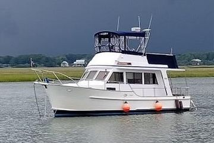

B-Scout Boat Guide · ISGY-32-EU
Island Gypsy 32 Europa Europa
1989–2003
The Island Gypsy 32 Europa is a traditional fiberglass cruising boat from the Halvorsen-associated Island Gypsy line. Depending on model it ranges from compact sedan/Europa layouts to larger motor cruisers, generally combining teak-rich interiors, semi-displacement hulls, protected shafting and flybridge/lower-helm cruising arrangements.

- Length
- 32 ft
- Beam
- 12 ft
- Draft
- 3.67 ft
- Hull behaviour
- Semi-Displacement
- Fuel
- Diesel
- Propulsion
- Shaft
- Engine configuration
- Single Inboard
- Boat family
- Cruiser
- Construction
- Solid fiberglass hull with extended salon overhang protecting side decks; extensive teak interior
Best for
- Couples wanting traditional trawler character and warm interiors
- Coastal and inland cruisers comfortable with older-boat maintenance
- Buyers who value flybridge and lower-helm flexibility
Trade-offs
- Exterior teak can create substantial maintenance burden
- Older tanks, windows and deck structures require condition-specific inspection
- Performance and engine count vary significantly across versions
Known concerns
- No model-specific concern has been promoted to B-Scout’s evidence threshold. This does not mean the model has no age-, condition- or hull-specific risks.
Inspection focus
- Confirm exact Island Gypsy model/variant and engine configuration from build records
- Moisture-test teak decks, window surrounds, rail bases and cabin-top penetrations
- Inspect fuel/water/waste tanks and hoses, particularly original installations
- Inspect engine cooling, exhaust, shaft, rudder and keel/running gear
- Review electrical, charging and generator upgrades and workmanship
Continue researching
Related boat models
Island Gypsy 32 Sedan Sedan
32 ft · Semi-Displacement
Island Gypsy 32 Fisherman Fisherman
32.08 ft · Semi-Displacement
Island Gypsy 36 Classic Classic
36 ft · Semi-Displacement
Island Gypsy 36 Europa Europa
36 ft · Semi-Displacement
Island Gypsy 40 Classic Classic
40 ft · Semi-Displacement
Carver 3207 Aft Cabin Aft Cabin
32 ft · Planing
About this record
B-Scout preserves uncertainty: missing information remains unknown rather than being treated as a negative. Specifications and guidance describe the model record; individual boats can differ by year, equipment, refit and condition.